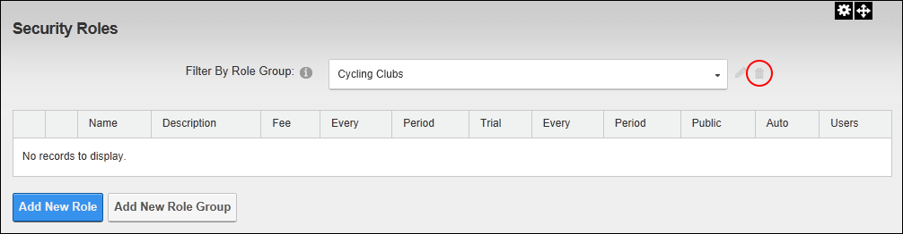

Deleting a Role Group
How to delete a role group from the Security Roles module. Note: If a role group has associated roles, the delete option will not be displayed.
You must first remove all roles belonging to a role group before deleting it. This can be achieved by editing each role associated with the Role Group and either changing the associated role group or disassociating the role group from all roles. See "Editing a Security Role"
- Navigate to Admin > Security Roles - OR - Go to a Security Roles module.
- At Filter By Role Group, select the role group from the drop down list.
- Click the Delete
 button. This displays the message "Are You Sure You Wish To Delete This Item".
button. This displays the message "Are You Sure You Wish To Delete This Item".
- Click the OK button to confirm.
